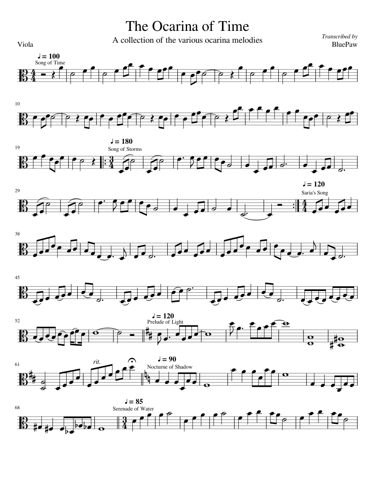

This website is a website designed for helping beginner musicians learn and practice their notes and rhythms depending on the clef that they read!
The purpose of this website is for fluency in reading sheet music and sight reading (having to play a piece never seeing it before)
There are so many notes each in different clefs in the music world! Music has 8 notes, though can be applied in different ways with different sharps, or flats. The notes are, A B C D E F G, and then goes back to A. The learning notes page is mainly for string instruments, Violin, Viola, Cello and Bass. So, the clefs will be structured around the capabilities of each instrument
Rhythms are the back bone of musical playing. In order to play, there needs to be some rhythms that go along with the notes. The notes and the rhythms give the music piece their own character.
